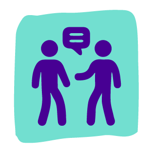

Coronavirus Ecuador
CULSULTA MEMORIAL
PROTOCOLOS Y MANUALES
DATOS ABIERTOS
Manejo de pacientes y familiares ansiosos, desafiantes, irritables o agresivos por parte del personal de salud
Los pacientes o sus familiares se pueden tornar desafiantes, difíciles, poco cooperativos o agresivos por varias razones:
El propio padecimiento médico
Sentimientos como frustración, miedo o ansiedad
Haber tenido malas experiencias previas
Haber tenido malas experiencias previas
Su comportamiento puede manifestarse con conductas exigentes y demandantes, falta de cooperación, violencia verbal, amenazas o incluso violencia física.
En todos los casos
-Mantén la calma y escucha lo que dicen.
-Reconoce sus quejas, valida lo que están sintiendo, pero no necesariamente la queja en sí.
-Evita la confrontación, no te pongas a la defensiva y ofrece resolver el problema.
-Cambia el foco de la discusión a cómo resolver el problema.
-Reitera que no se les negará la atención médica.
-Aclara que el tratamiento se proporcionará con base a la necesidad clínica, los protocolos establecidos y la disponibilidad de recursos.
-No insistas en tener la “última palabra” o la «razón».
-Siempre mantén una distancia adecuada y ubícate en una zona de donde puedas salir fácilmente.
-Mantente alerta de signos de potencial agresión: cambio en el tono de voz, señalarte con el dedo mientras reclama, cambios físicos (sudoración, -enrojecimiento de cara y respiración acelerada) y empuñar las manos.
-Si el paciente se torna agresivo y toma algún objeto que quiera usar como arma, pídele que la bajen. No le pidas que te la entreguen. Solicita
-ayuda, sal de la habitación y llama a seguridad.
Durante todo este proceso:
Habla con tono calmado y palabras claras
Habla con tono calmado y palabras claras
Mantén contacto visual pero no prolongado

Trata de limitar expresiones faciales que contradigan tus palabras
Evita movimientos bruscos o súbitos
Respeta el espacio personal y evita tocar a la persona para calmarla
Habla con tono calmado y palabras claras
Habla con tono calmado y palabras claras
Mantén contacto visual pero no prolongado
Trata de limitar expresiones faciales que contradigan tus palabras
Evita movimientos bruscos o súbitos
Respeta el espacio personal y evita tocar a la persona para calmarla
Después del evento es importante «sacudirte el mal momento», no dejes que una experiencia así arruine tu día. Realiza ejercicios de respiración y relajación o platica con tus compañeros.
Recuerda que también están disponibles los servicios de atención a salud mental enfocados a atender al personal de salud.